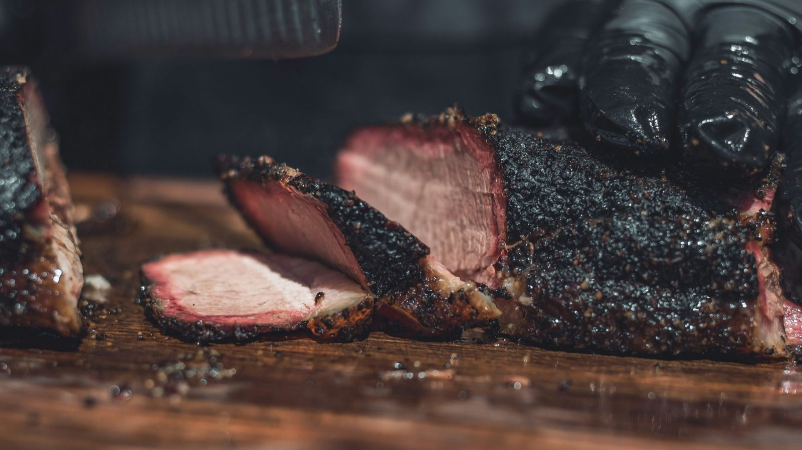

Explore your city, one box at a time.
Marlowby highlights the best local products, small businesses, and cultural experiences from cities across the United States. Every month, subscribers receive a curated box featuring items from a different U.S. city.
Our story
Marlowby started with a simple idea: the best way to understand a place is through the people who feed it. A city is more than its landmarks. It is the bakery with the line out the door, the smokehouse that has used the same rub for decades, and the spice blend a family has sold for generations.
Big online marketplaces make it easy to buy anything from anywhere, but they make it hard to find the small businesses that give a city its flavor. We wanted to build the opposite: a box that introduces you to a place, one maker at a time, and makes sure those makers are paid fairly for their work.
Each box is one stop on a route across the United States. Over a year, members get to know twelve cities, and the small businesses behind them, without leaving home.

Highlight the best local products, small businesses, and cultural experiences from cities across the United States, and support the local communities behind them.
What we commit to
What we promise.
Wholesale, always
Every product is bought at full wholesale price, and makers are paid promptly.
Local curators
Each box is shaped by a paid curator who lives in the city.
Names, not labels
Every maker is named in the field guide, with a link to their own shop.
No filler
Only what belongs in the box, packed in recyclable materials.
Team Wander
Who built this site.
Hunter Sheeler
Page layout, graphics and media, and the written content, including the city boxes, plans, and Works Cited.
Trent Skelton
Coding, the navigation scheme, and compatibility testing across browsers, phones, and accessibility tools.